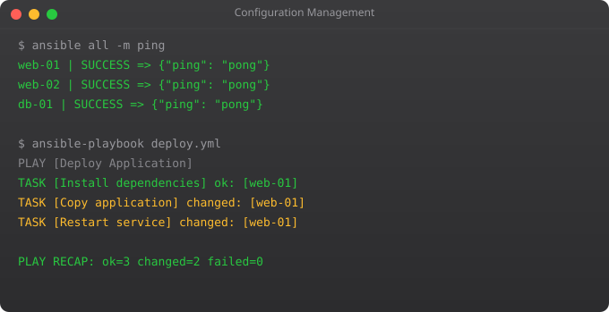

Most developers know basic Git. DevOps engineers need to know Git deeply -- the strategies that keep large teams productive, the rescue commands that recover lost work, and the integration patterns that connect Git to automated pipelines. This part covers the Git knowledge that makes the difference between a junior and senior DevOps practitioner.
Trunk-based development (TBD) is the branching model used by Google, Facebook, and most high-performing engineering teams. Instead of long-lived feature branches, developers work on small branches that merge to main (trunk) within hours or days. Feature flags control what is visible to users, not branches.
# Short-lived branches (hours to 2 days maximum)
git checkout -b feature/add-endpoint
# Make changes -- small, focused
git commit -m "feat: add /health endpoint"
# Open PR immediately
git push -u origin feature/add-endpoint
# After review and CI passes (minutes), merge to main
# Delete branch immediately after merge
git branch -d feature/add-endpoint# Get the commit hash you want
git log --oneline
# abc1234 fix: patch critical security vulnerability
# Apply that single commit to current branch
git cherry-pick abc1234
# Apply a range of commits
git cherry-pick abc1234..def5678
# Real scenario: hotfix on main, then cherry-pick to release branch
git checkout main
git cherry-pick hotfix-commit-hash# When: something broke but you do not know which commit
git bisect start
git bisect bad # Current commit is broken
git bisect good v1.2.0 # This tag was working
# Git checks out a midpoint commit
# Test it manually or run a test script
git bisect good # This commit is fine
git bisect bad # This commit has the bug
# Git narrows down -- repeat until it finds the culprit
# Git tells you: "abc1234 is the first bad commit"
# Automate with a test script
git bisect run pytest tests/test_auth.py# reflog records every HEAD movement
git reflog
# HEAD@{0}: commit: add feature
# HEAD@{1}: reset: moving to HEAD~2
# HEAD@{2}: commit: broke everything
# Recover a commit you thought was gone
git checkout HEAD@{2}
git checkout -b recovery-branch
# Recover after accidental git reset --hard
git reset --hard HEAD@{2} # Go back to that point# Annotated tag (use for releases)
git tag -a v1.2.0 -m "Release 1.2.0 - Add user authentication"
# Lightweight tag (for internal markers)
git tag v1.2.0-rc1
# Push tags to remote
git push origin v1.2.0
git push origin --tags # Push all tags
# List tags
git tag -l "v1.*"
# Delete a tag
git tag -d v1.0.0
git push origin --delete v1.0.0
# CI/CD pattern: only deploy to production on tag push
# GitHub Actions: on: push: tags: - "v*"# pre-receive: runs on server before accepting push
# Used for: requiring signed commits, blocking force pushes
# post-receive: runs after accepting push
# Used for: triggering deployments, sending notifications
# Example post-receive hook
#!/bin/bash
while read oldrev newrev refname; do
if [[ $refname == "refs/heads/main" ]]; then
echo "Main branch updated -- triggering deployment"
curl -X POST https://jenkins/job/deploy/build
fi
doneGit Flow uses long-lived develop, feature, release, and hotfix branches. Trunk-based development uses only short-lived branches that merge to main quickly. High-performing teams prefer trunk-based for faster delivery and fewer merge conflicts. Git Flow works for teams with infrequent releases and strict versioning requirements.
git reflog shows every recent HEAD movement. Find the commit before the reset and: git reset --hard HEAD@{N} to go back. Act quickly -- reflog entries expire after 90 days by default.
When you need to apply a specific commit (like a hotfix) to a different branch without merging the entire branch. Common for backporting fixes to older release branches or applying a bug fix from develop to a production hotfix branch.
MAJOR.MINOR.PATCH format. Increment MAJOR for breaking changes, MINOR for new features, PATCH for bug fixes. v1.2.3 means major version 1, minor version 2, patch 3. Git tags combined with semantic versioning create a clear release history for users and automated systems.
Add upstream: git remote add upstream https://github.com/original/repo. Fetch: git fetch upstream. Merge: git merge upstream/main. Push to your fork: git push origin main. Do this regularly to avoid large merge conflicts.
In Part 6, we cover CI/CD pipelines -- building automated pipelines with GitHub Actions that take code from commit to production.
← Back to BlogTrunk-based development sounds simple in theory but has practical challenges in real teams. Here is how to handle common scenarios that trip up teams new to TBD.
# Long feature using feature flags (not long branches)
# In code: feature is deployed but disabled for users
if settings.ENABLE_NEW_CHECKOUT:
return new_checkout_flow(request)
return old_checkout_flow(request)
# Flag stored in environment variable or database
# Enable for 1% of users: feature flag service controls this
# When feature is stable: remove the flag and old code
# Hotfix on trunk-based development:
git checkout main
git pull origin main
git checkout -b hotfix/critical-auth-bug
# Make minimal fix
git commit -m "fix: patch authentication bypass vulnerability"
git push -u origin hotfix/critical-auth-bug
# Create PR -- must be reviewed and merged same day
# Then cherry-pick to any release branches if neededrepos:
- repo: https://github.com/pre-commit/pre-commit-hooks
rev: v4.5.0
hooks:
- id: trailing-whitespace
- id: end-of-file-fixer
- id: check-yaml
- id: check-json
- id: check-merge-conflict
- id: detect-private-key # Critical: block AWS key commits
- id: no-commit-to-branch
args: ['--branch', 'main'] # Force feature branches
- repo: https://github.com/gitleaks/gitleaks
rev: v8.18.0
hooks:
- id: gitleaks # Scan for secrets in every commit
- repo: https://github.com/psf/black
rev: 23.12.0
hooks:
- id: black
- repo: https://github.com/PyCQA/flake8
rev: 7.0.0
hooks:
- id: flake8